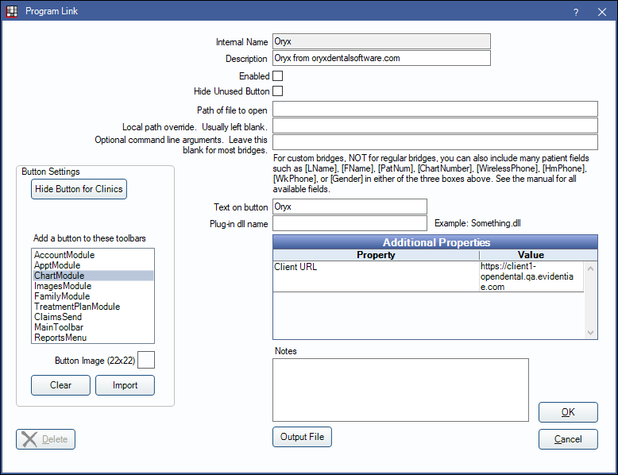
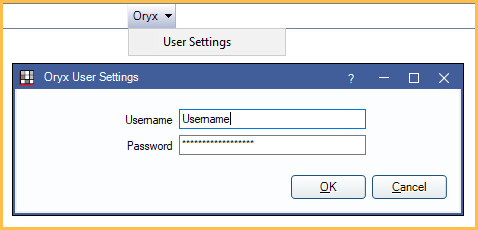

Oryx Bridge
In Program Links, double-click on Oryx from oryxdentalsoftware.com.
Oryx offers a clinical module. Website: https://oryxdentalsoftware.com/.
To enable the bridge:
- Check the Enabled box.
- Double-click on Additional Properties to change settings.
- Client URL: Enter the unique URL Oryx has assigned to the office.
- Set up up a clickable bridge button.
- Under Add a button to these toolbars, highlight where to display the button.
- Enter the Text on button.
- (Optional) Import an image to show on the button (22 x 22 pixels).
- If using clinics, click Hide Button for Clinics. Select which clinics the button should display on.
- Click OK.
When enabled, a dropdown menu will appear next the Oryx button. Click User Settings from the dropdown to enter a username and password.
Click OK to save.